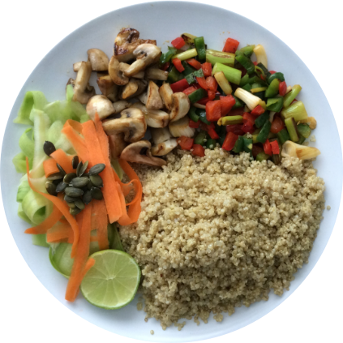

Bowl de Quinoa y Vegetales
Tiempo de preparación: 30 minutos
Porciones: 2
Ingredientes:
- 1 taza de quinoa
- 2 tazas de agua
- 1 calabacín mediano, en rodajas
- 1 pimiento rojo, en tiras
- 1 zanahoria grande, en rodajas
- 1 taza de garbanzos cocidos
- 2 cucharadas de aceite de oliva
- 1 aguacate, en rodajas
- 1/4 de taza de semillas de calabaza
- Sal y pimienta al gusto
- Jugo de 1 limón
Instrucciones:
- Enjuaga la quinoa y cocínala en agua con una pizca de sal según las instrucciones del paquete (generalmente 15-20 minutos). Deja enfriar.
- Precalienta el horno a 200°C (400°F).
- En una bandeja para hornear, coloca el calabacín, pimiento y zanahoria. Rocía con 1 cucharada de aceite de oliva y sazona con sal y pimienta. Asa por 20 minutos o hasta que estén tiernos.
- En un tazón pequeño, mezcla los garbanzos con el jugo de limón, la cucharada restante de aceite de oliva, sal y pimienta.
- Para servir, divide la quinoa en dos bowls. Añade los vegetales asados y los garbanzos aliñados.
- Decora con rodajas de aguacate y espolvorea con semillas de calabaza.
- Sirve inmediatamente y disfruta de tu nutritivo bowl de quinoa y vegetales.
Información Nutricional (por porción):
Calorías: 550
Proteínas: 18g
Carbohidratos: 65g
Grasas: 28g
Fibra: 15g